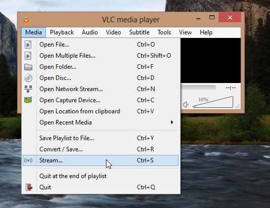

How to download YouTube Videos using VLC - 2017
Actually, this method is not using VLC. It is written in Python. So, I'll put this at the end of this tutorial!
The steps to download a video from YouTube is very simple in concept: play the video on our Browser, and save the file by right mouse click on the video. So, the key is to move the video's playground from YouTube to our Browser.
Get the url while the video is played on YouTube:
Run VLC player, then select Open Network Stream...
Paste the YouTube URL into network URL, then hit Play:
While the video is playing, go to Tools -> Codec Information:

As shown in the picture below, we get the video file location Ctrl+A while holding the mouse:
Paste the file info into the url of browser:
Right mouse click, and choose Save As...
https://www.youtube.com/playlist?list=PLZI6KTHH6719rdZQ_OpJu5G7wQDcm4PoYNow, we have the file in our PC!
In this method, we just do streaming using VLC with its target set as a file.
Get the url while the video is played on YouTube:
Run VLC player, then select Stream...
Paste the YouTube URL into network URL, then hit Stream button:
Just click Next at the Source setup dialog:
In the Destination Setup window, click Add:

Put the destination file name:
https://www.youtube.com/playlist?list=PLZI6KTHH6719rdZQ_OpJu5G7wQDcm4PoYClick Stream button at the Option Setup dialog:
Now, VLC is transcoding while doing streaming:
Written in Python, the youtube-dl is one of the most popular tools for downloading videos not only from YouTube but from other sources.
- How to download youtube-dl?
$ sudo curl https://yt-dl.org/downloads/2016.01.09/youtube-dl -o /usr/local/bin/youtube-dl
- Set a executable execute permission
$ sudo chmod a+x /usr/local/bin/youtube-dl
- How to use it to download YouTube video?
To download a video file, simply run the following command. All we need is the url of the video that we want to download.$ youtube-dl https://www.youtube.com/watch?v=dP15zlyra3c [youtube] dP15zlyra3c: Downloading webpage [youtube] dP15zlyra3c: Downloading video info webpage [youtube] dP15zlyra3c: Extracting video information [youtube] dP15zlyra3c: Downloading DASH manifest [youtube] dP15zlyra3c: Downloading DASH manifest [download] Destination: Fox Snow Dive - Yellowstone - BBC Two-dP15zlyra3c.f137.mp4 [download] 100% of 13.25MiB in 00:08 [download] Destination: Fox Snow Dive - Yellowstone - BBC Two-dP15zlyra3c.f141.m4a [download] 100% of 1.78MiB in 00:01 [ffmpeg] Merging formats into "Fox Snow Dive - Yellowstone - BBC Two-dP15zlyra3c.mp4" Deleting original file Fox Snow Dive - Yellowstone - BBC Two-dP15zlyra3c.f137.mp4 (pass -k to keep) Deleting original file Fox Snow Dive - Yellowstone - BBC Two-dP15zlyra3c.f141.m4a (pass -k to keep)
- Downloading done!
$ ls Fox Snow Dive - Yellowstone - BBC Two-dP15zlyra3c.mp4
- List of available formats
$ youtube-dl --list-formats https://www.youtube.com/watch?v=dP15zlyra3c [youtube] dP15zlyra3c: Downloading webpage [youtube] dP15zlyra3c: Downloading video info webpage [youtube] dP15zlyra3c: Extracting video information [youtube] dP15zlyra3c: Downloading DASH manifest [youtube] dP15zlyra3c: Downloading DASH manifest [info] Available formats for dP15zlyra3c: format code extension resolution note 171 webm audio only DASH audio 118k , vorbis@128k (44100Hz), 761.87KiB 140 m4a audio only DASH audio 129k , m4a_dash container, aac @128k (44100Hz), 916.53KiB 141 m4a audio only DASH audio 255k , m4a_dash container, aac @256k (44100Hz), 1.78MiB 160 mp4 256x144 DASH video 111k , avc1.4d400c, 13fps, video only, 785.14KiB 242 webm 426x240 DASH video 114k , vp9, 1fps, video only, 570.74KiB 243 webm 640x360 DASH video 203k , vp9, 1fps, video only, 1009.74KiB 133 mp4 426x240 DASH video 247k , avc1.4d4015, 25fps, video only, 1.69MiB 134 mp4 640x360 DASH video 251k , avc1.4d401e, 25fps, video only, 1.23MiB 244 webm 854x480 DASH video 368k , vp9, 1fps, video only, 1.81MiB 135 mp4 854x480 DASH video 542k , avc1.4d401e, 25fps, video only, 2.78MiB 247 webm 1280x720 DASH video 622k , vp9, 1fps, video only, 3.35MiB 136 mp4 1280x720 DASH video 1163k , avc1.4d401f, 25fps, video only, 6.50MiB 248 webm 1920x1080 DASH video 1171k , vp9, 1fps, video only, 6.80MiB 137 mp4 1920x1080 DASH video 2087k , avc1.640028, 25fps, video only, 13.25MiB 17 3gp 176x144 small , mp4a.40.2, mp4v.20.3 36 3gp 320x240 small , mp4a.40.2, mp4v.20.3 5 flv 400x240 small 43 webm 640x360 medium , vorbis, vp8.0 18 mp4 640x360 medium , mp4a.40.2, avc1.42001E 22 mp4 1280x720 hd720 , mp4a.40.2, avc1.64001F (best)
- To download a preferred file format, use the option -f (video format code). For example, if we want to download webm format, we use 43 as shown below:
$ youtube-dl -f 43 https://www.youtube.com/watch?v=dP15zlyra3c
- To download a list of videos, we can use a playlist. Just add the playlist URL:
$ youtube-dl https://www.youtube.com/playlist?list=PLZI6KTHH6719rdZQ_OpJu5G7wQDcm4PoY [youtube:playlist] PLZI6KTHH6719rdZQ_OpJu5G7wQDcm4PoY: Downloading webpage [download] Downloading playlist: Quantum theory [youtube:playlist] playlist Quantum theory: Downloading 2 videos [download] Downloading video 1 of 2 [youtube] e5_V78SWGF0: Downloading webpage [youtube] e5_V78SWGF0: Downloading video info webpage [youtube] e5_V78SWGF0: Extracting video information [youtube] e5_V78SWGF0: Downloading DASH manifest [youtube] e5_V78SWGF0: Downloading DASH manifest WARNING: Requested formats are incompatible for merge and will be merged into mkv. [download] Destination: Quantum Theory Made Easy [1]-e5_V78SWGF0.f137.mp4 [download] 100% of 324.10MiB in 02:48 [download] Destination: Quantum Theory Made Easy [1]-e5_V78SWGF0.f251.webm [download] 100% of 30.87MiB in 00:21 [ffmpeg] Merging formats into "Quantum Theory Made Easy [1]-e5_V78SWGF0.mkv" Deleting original file Quantum Theory Made Easy [1]-e5_V78SWGF0.f137.mp4 (pass -k to keep) Deleting original file Quantum Theory Made Easy [1]-e5_V78SWGF0.f251.webm (pass -k to keep) [download] Downloading video 2 of 2 [youtube] FlIrgE5T_g0: Downloading webpage [youtube] FlIrgE5T_g0: Downloading video info webpage [youtube] FlIrgE5T_g0: Extracting video information [youtube] FlIrgE5T_g0: Downloading DASH manifest [youtube] FlIrgE5T_g0: Downloading DASH manifest WARNING: Requested formats are incompatible for merge and will be merged into mkv. [download] Destination: Quantum Theory Made Easy [2]-FlIrgE5T_g0.f137.mp4 [download] 100% of 321.89MiB in 03:05 [download] Destination: Quantum Theory Made Easy [2]-FlIrgE5T_g0.f251.webm [download] 100% of 34.72MiB in 00:18 [ffmpeg] Merging formats into "Quantum Theory Made Easy [2]-FlIrgE5T_g0.mkv" Deleting original file Quantum Theory Made Easy [2]-FlIrgE5T_g0.f137.mp4 (pass -k to keep) Deleting original file Quantum Theory Made Easy [2]-FlIrgE5T_g0.f251.webm (pass -k to keep) [download] Finished downloading playlist: Quantum theory $ ls Quantum Theory Made Easy [1]-e5_V78SWGF0.mkv Quantum Theory Made Easy [2]-FlIrgE5T_g0.mkv
- When we downloaded the playlist, the default option is to delete original files. So, if we want to keep them, we can just provide -k as shown below:
$ youtube-dl -k https://www.youtube.com/playlist?list=PLZI6KTHH6719rdZQ_OpJu5G7wQDcm4PoY
- We can download a video from Vimeo as well:
$ youtube-dl https://vimeo.com/22439234 [vimeo] 22439234: Downloading webpage [vimeo] 22439234: Extracting information [vimeo] 22439234: Downloading webpage [vimeo] 22439234: Downloading JSON metadata [vimeo] 22439234: Downloading m3u8 information [download] Destination: The Mountain-22439234.mp4 [download] 100% of 59.93MiB in 01:23
Ph.D. / Golden Gate Ave, San Francisco / Seoul National Univ / Carnegie Mellon / UC Berkeley / DevOps / Deep Learning / Visualization